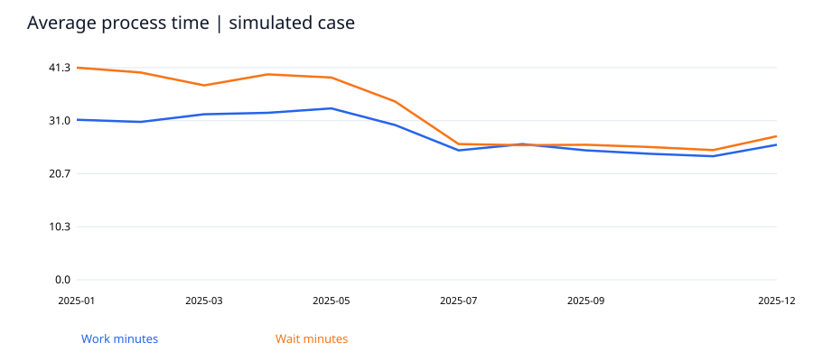
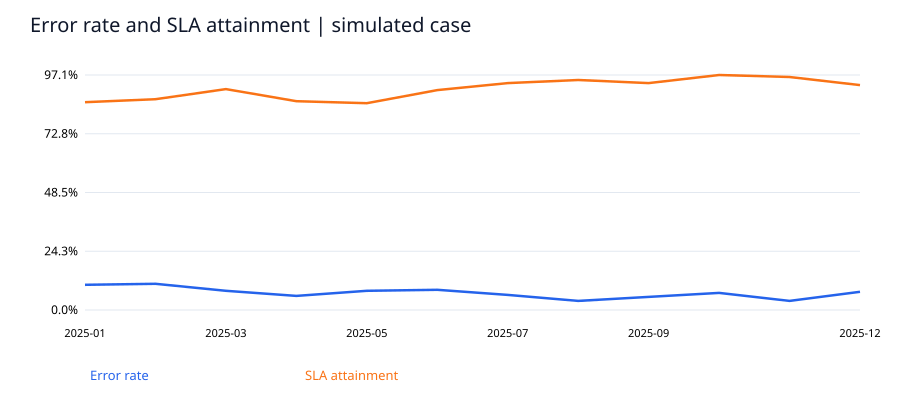

完了タスク件数2,880
平均作業時間の減少率20.2%
前半期エラー率8.5%
後半期エラー率5.6%
後半期SLA達成率94.8%
主要な発見
模擬データ2,880件で、後半期の平均作業時間は前半期比20.2%低い。エラー率は8.5%から5.6%。改善を仮定した生成条件が結果に含まれるため、実証された業務効果ではない。
前半期の難易度構成を固定した平均作業時間の減少率は18.2%。難易度・期内の行を独立に再抽出する1000回のブートストラップ区間は16.1%–20.2%。固定した構成比と独立行という仮定に条件づけた区間であり、日次相関や交絡は評価していない。模擬生成の効果を現実の因果効果へ一般化できない。
率はパーセント表示。解決日数は暦日。定義はデータ辞書とREADMEを参照。


SQLによる検証結果
| phase |
complexity |
tasks |
avg_work_minutes |
avg_wait_minutes |
error_rate |
sla_rate |
| After |
Complex |
360 |
45.1974 |
48.6795 |
0.0972 |
0.7917 |
| After |
Standard |
1080 |
18.6819 |
18.9171 |
0.0426 |
1.0000 |
| Before |
Complex |
394 |
54.9792 |
69.3854 |
0.1396 |
0.5685 |
| Before |
Standard |
1046 |
22.9661 |
27.5249 |
0.0650 |
0.9943 |
意思決定への提案
Complex案件を優先して受付チェックリストと承認ルールを試行する。実務では件数、複雑度、担当者、流入時刻を記録し、比較対象を置いた小規模パイロットで品質と時間の両面を確認する。
解釈の範囲
完全な模擬ケース。2025年の各月240件の完了タスクのみ。待ち時間は暦上の経過分。未完了案件や稼働人数がないため、バックログや一人当たり生産性は算出しない。Before/Afterは季節・担当者差の影響を排除できず、因果効果とみなせない。